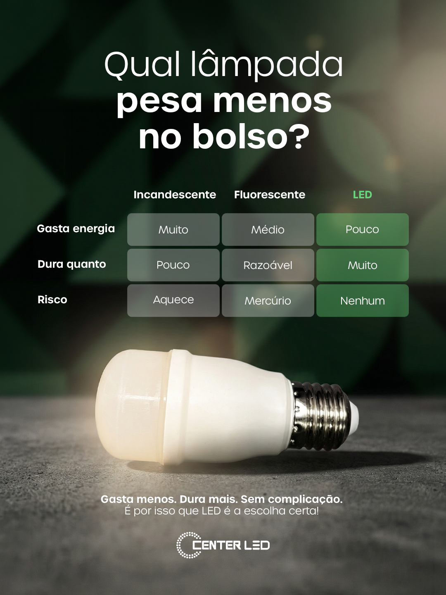

Dados do relatório trimestral Dez/2025 – Fev/2026 · 100% orgânico
Visão geral — Janeiro 2026
👁
8.724
Visualizações totais
100% orgânico
📣
57%
Alcance fora da base
Maior do trimestre
🎬
14
Publicações no mês
8 Reels · 6 Posts
👥
2.900
Seguidores
base ativa
Destaque do mês
1.317
visualizações no reel destaque
Janeiro registrou o maior alcance de não-seguidores do trimestre (57%). O conteúdo orgânico estava atingindo potenciais compradores fora da base.
Análise estratégica
Origem das views57% fora da base
Formato dominanteReels
Reels publicados8
Posts publicados6
Seguidores2.900
Início de ano com forte presença orgânica. A sazonalidade pós-Natal reduziu o volume de vendas do setor, mas o conteúdo manteve alcance acima da média.
Dados do relatório trimestral Dez/2025 – Fev/2026 · 100% orgânico
Visão geral — Fevereiro 2026
👁
6.490
Visualizações totais
100% orgânico
📣
52%
Alcance fora da base
acima da média
🎬
12
Publicações no mês
6 Reels · 6 Posts
👥
2.968
Seguidores
+68 vs jan
Destaque do mês
1.228
visualizações no reel destaque
Fevereiro é historicamente o mês de menor volume no setor de iluminação. A consistência de produção manteve a marca presente e ativa, preservando a base construída.
Análise estratégica
Origem das views52% fora da base
Formato dominanteReels
Reels publicados6
Posts publicados6
Seguidores2.968
Visualizações estáveis em período de baixa sazonalidade — resultado de consistência estratégica, não pico pontual.
Período: Março 2026 · Instagram + Google Meu Negócio · 100% orgânico
14 meses de parceria
100% orgânico até abril
Zero anúncios até maio
Visão geral do período
👁
14.157
Visualizações totais
+224,2% contas alcançadas
📣
5.637
Contas alcançadas
+224,2%
💬
196
Interações totais
Seguidores: 90%
👥
2.985
Seguidores atuais
+0,4% vs mar 6
📊
6,57%
Taxa de engajamento
196 interações ÷ 2.985 seguidores.
Uma taxa acima de 5% é considerada excelente para contas de negócio local. A Center Led está performando acima da média do setor.
Visualizações e distribuição
Origem das visualizações
Quase 3 em cada 4 visualizações vieram de pessoas fora da base. Sinal saudável de alcance orgânico ativo.
Visualizações por formato
Stories dominam as visualizações, mas Reels lideram em alcance de não-seguidores. Aumentar frequência de Reels é prioridade.
Interações detalhadas
Posts
Curtidas76
Comentários10
Salvamentos2
Compartilhamentos6
Reposts13
Reels
Curtidas37
Comentários3
Salvamentos1
Reposts3
% do total18,6%
Stories
Respostas2
Do total de inter.38,6%
Principal storyFeliz Aniv.
Stories lideram visualizações mas têm menor taxa de resposta. CTA direto pode ativar mais respostas.
Conteúdos de maior alcance
Top 4 por visualizações — Março 2026

7,4 mil
Reel
18 de março
Vaga de vendedor: formato de anúncio de emprego

824
Reel
9 de março
Apresentação institucional de produto

665
Post
13 de março
Semana do Consumidor: oferta especial

515
Reel
7 de abril
Review de produto técnico: lançamento
Perfil do público
Faixa etária dos seguidores
Gênero e localização
Top cidades
Atividade e crescimento
Atividade do perfil
Total de ações303
vs período anterior+12,6%
Visitas ao perfil252
Visitas vs anterior+7,2%
Cliques em links51 (+50%)
Crescimento de seguidores
Total atual2.985
Novos seguidores+30
Unfollows–19
Líquido no período+11
vs fevereiro+9 em março
Publicações no período
Reels publicados4
Posts publicados9
Última semana (Reels)1
Última semana (Posts)1
Views última semana953 (+29%)
Análise e insights
🚀
Alcance explodiu +224%
O crescimento de contas alcançadas foi o maior destaque do período. O algoritmo está respondendo à frequência e ao formato com distribuição além da bolha dos seguidores.
🎯
Reel de vaga dominou o período
O post de vaga de vendedor (18 mar) acumulou 7,4 mil visualizações — mais de 52% de todo o alcance do mês. Conteúdo de interesse humano e local tem alto potencial de viralização.
⚠️
Frequência de Reels abaixo do ideal
Apenas 4 Reels no mês. O formato com maior potencial de alcance de não-seguidores está sendo subutilizado. Meta recomendada: mínimo 1 Reel/semana, idealmente 2.
📍
Público local majoritário e ativo
52,4% de João Pessoa. Conteúdo com referências locais performa acima da média. Presença em São Paulo (2,3%) indica potencial de escala além do estado.
📈
Cliques em links cresceram 50%
51 cliques em links externos — alta de 50% sobre o período anterior. O conteúdo está gerando intenção de contato. Há espaço para aumentar com CTAs mais diretos nos Stories.
💡
Momento ideal para tráfego pago
Base orgânica consolidada, engajamento acima da média e conteúdo validado. O próximo passo natural é ampliar o alcance com campanhas pagas — ativado em maio.
Google Meu Negócio — Março 2026
🔍
1.722
Visualizações do perfil
+69%
🔎
316
Pesquisas no Google
+222%
💬
175
Interações totais
no mês
Métricas do Instagram: janela de 30 dias — 11/abr a 10/mai · Instagram confirmou bons resultados em abril
Visão geral — Abril 2026
👁
14.268
Visualizações totais
incl. stories
📣
4.980
Contas alcançadas
–10,2%
💬
224
Interações totais
+14,3% vs mar
👥
2.970
Seguidores atuais
+17 em abril
Resumo Mensal · Abril
Instagram confirmou:
Bons resultados em abril
3,6 mil
views reels + posts
54%
de não seguidores
+2% vs março
+17
seguidores em abril
vs março
📊
7,5%
Taxa de engajamento
Recorde — supera março (6,57%)
224 interações ÷ 2.970 seguidores.
A taxa de engajamento bateu o maior índice registrado — superando os 6,57% de março. A base está mais ativa e respondendo ao conteúdo com mais força. Acima de 5% é referência de excelência para negócios locais.
Visualizações e distribuição
Origem das visualizações
2 em cada 3 visualizações vieram de pessoas fora da base. Alcance orgânico continua forte, apresentando a marca a novos públicos.
Visualizações por formato (todos)
🚀
Reels triplicaram de 8,5% em março para 21,4% — o algoritmo está distribuindo muito mais o formato.
Interações detalhadas
Por formato
Reels lideram em interações (45,3%), confirmando que o formato mais alcançado também é o mais engajante.
Por tipo de ação
Curtidas95
Comentários11
Salvamentos1
Compartilhamentos8
Reposts22
Origem das interações
87,4%
das interações vieram de seguidores
Seguidores87,4%
Não seguidores12,6%
Base fiel e engajada. Cresce espaço para campanhas pagas atingirem novos públicos.
Conteúdos de maior alcance
Top 4 por visualizações — Abril/Mai 2026

4,8 mil
Post
15 de abril
Qual é a lâmpada certa? Conteúdo educativo de produto
Rende pouco
estudando em casa?
1 mil
Reel
22 de abril
Rende pouco estudando ou trabalhando em casa?
2 de maio
Reel de produto — início do período com tráfego pago
4 de maio
Reel de loja — equipe e produtos em destaque
Perfil do público
Faixa etária dos seguidores
Top cidades
João Pessoa caiu de 52,4% (março) para 35,2% — sinal positivo: o conteúdo está alcançando mais cidades da região. Santa Rita dobrou de representatividade.
Atividade e crescimento
Atividade do perfil
Total de ações368
vs período anterior+21,1%
Visitas ao perfil327
Visitas vs anterior+28,7%
Toques em links41 (–18%)
Crescimento de seguidores
Total atual2.970
Novos seguidores+32
Deixaram de seguir–48
Líquido 30 dias–16
Abril especificamente+17 vs março
Publicações no período
Conteúdos em abril24
FormatosReels + Posts
Reel destaque314 views
Conteúdo compartilhado40
Reposts22
Análise e insights estratégicos
🏆
Engajamento bateu novo recorde: 7,5%
Superou os 6,57% de março e consolidou a Center Led acima de qualquer benchmark para negócios locais. A base está mais ativa — mais pessoas respondendo, repostando e curtindo.
🚀
Reels triplicaram em relevância
O formato saltou de 8,5% (março) para 21,4% das visualizações — crescimento de 2,5x. O algoritmo está favorecendo a frequência de Reels. Momento ideal para dobrar a produção.
🎯
Vaga de vendedor: formato campeão confirmado
O post de 15/04 acumulou 4.800 visualizações — o maior do período. Repete o padrão de março (7.400 views no reel de vaga). Conteúdo de interesse humano local continua sendo o maior driver de alcance.
📈
Atividade do perfil cresceu +21%
368 ações totais e 327 visitas ao perfil (+28,7%). Mais pessoas chegando até o perfil — o topo do funil está funcionando. Isso prepara o terreno para o tráfego pago converter melhor.
⚠️
Links externos caíram –18%
41 toques em links vs 51 em março. Queda preocupante após o pico de +50% no mês anterior. O CTA nos Stories e na bio precisa ser reativado com chamadas mais diretas para WhatsApp.
🌍
Alcance geográfico se diversificou
João Pessoa caiu de 52,4% para 35,2% do alcance total. Santa Rita (6,2%), Campina Grande (4,6%) e Cabedelo (2,8%) cresceram em representatividade — a marca está chegando em mais cidades.
Novidade — Maio 2026
Novo · Início em maio
Tráfego Pago ativado
Após consolidar a base orgânica ao longo de 2026, a Center Led inicia sua primeira campanha paga — gerenciada por Gabriel (Eminence), parceiro estratégico da Hoclle Agency com histórico comprovado em varejo local.
Criativo inicial
Vídeo 01 — Reel de 30s com apresentação da loja e equipe
Segmentação
Público geral · 20–60 anos · João Pessoa · Raio 5km
Gestão
Gabriel — Eminence · Meta Ads / Instagram Ads
Próximos passos
O que fazemos agora →
01
Acompanhar e otimizar o tráfego pago
Monitorar os primeiros resultados do Vídeo 01 — visualizações, alcance e leads gerados. Ajustar segmentação e criativos conforme os dados iniciais com Gabriel (Eminence).
02
Iniciar produção do mascote — após aprovação da proposta
O mascote é o próximo ativo de identidade da Center Led. Com a proposta aprovada, a produção entra em fase de desenvolvimento — peça estratégica para reconhecimento de marca e diferenciação local.
03
Intensificar Reels para 2× por semana
Com Reels triplicando em participação (8,5% → 21,4%), este é o formato a dobrar. Meta: 2 Reels por semana, com foco em humanização, equipe e demonstração de produto.
04
Reativar CTA em links externos
Cliques em links caíram –18%. Inserir chamadas diretas nos Stories ("fala no WhatsApp", "acesse o link na bio") e atualizar a bio com link ativo para contato ou catálogo.
05
Manter série "Center Led Responde"
Série educativa já em andamento para maio (fita LED, disjuntor, INMETRO). Conteúdo de autoridade técnica que gera salvamentos, compartilhamentos e posiciona a marca como referência no setor.
06
Expandir segmentação geográfica no tráfego pago
Alcance em outras cidades cresceu organicamente (Santa Rita, Campina Grande, Cabedelo). Testar campanhas segmentadas para essas cidades pode amplificar o efeito e gerar novos clientes fora de João Pessoa.